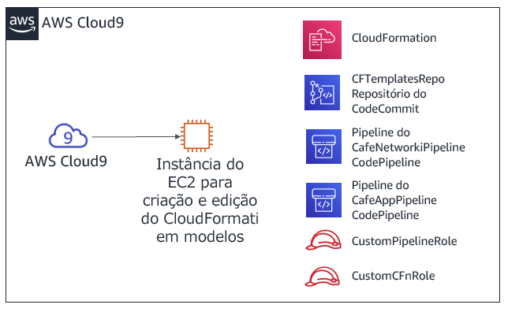
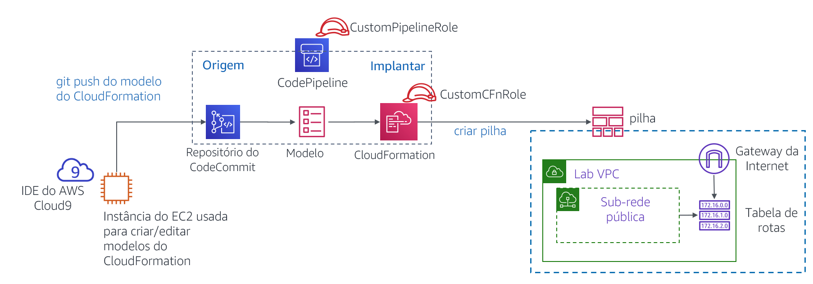

Módulo 10 – Laboratório de desafio: Automatizar a implantação da infraestrutura
Cenário
Até esse ponto, a equipe da cafeteria criou seus recursos da AWS e configurou suas aplicações manualmente, usando principalmente o Console de Gerenciamento da AWS. Essa abordagem funcionou bem como uma maneira de a cafeteria começar com uma presença na Web rapidamente. No entanto, eles consideram um desafio replicar suas implantações em novas regiões da AWS para que possam oferecer suporte a novos locais da cafeteria em vários países. Eles também gostariam de ter ambientes de desenvolvimento e produção separados que tenham configurações correspondentes de forma confiável.
Neste laboratório de desafio, você assumirá o papel de Sofía enquanto trabalha para automatizar as implantações da cafeteria e replicá-las em outra região da AWS.
Visão geral e objetivos do laboratório
Neste laboratório, você ganhará experiência com a criação de modelos do AWS CloudFormation. Você usará os modelos para criar e atualizar pilhas do AWS CloudFormation. As pilhas criam e gerenciam atualizações de recursos em várias áreas de serviço da AWS em sua conta da AWS. Você praticará o uso do AWS CodeCommit para controlar a versão de seus modelos. Você também observará como usar o AWS CodePipeline para automatizar atualizações de pilha.
Depois de concluir este laboratório, você deverá ser capaz de:
Implantar uma camada de rede de Virtual Private Cloud (VPC) usando um modelo do AWS CloudFormation
Implantar uma camada de aplicação usando um modelo do AWS CloudFormation
Usar o Git para chamar o AWS CodePipeline e criar ou atualizar pilhas a partir de modelos armazenados no AWS CodeCommit
Duplicar recursos de rede e aplicações para outra região da AWS usando o AWS CloudFormation
Quando você inicia o laboratório, os seguintes recursos já são criados para você na conta da AWS:

Observe que, neste laboratório de desafio, você encontrará algumas tarefas sem instruções passo a passo. Você mesmo deverá descobrir como concluir as tarefas.
Duração
Este laboratório levará aproximadamente 90 minutos para ser concluído.
Restrições de serviço da AWS
Neste ambiente de laboratório, o acesso aos serviços e ações de serviço da AWS pode estar restrito àqueles necessários para concluir as instruções do laboratório. Você poderá encontrar erros se tentar acessar outros serviços ou executar ações além do que está descrito neste laboratório.
Acessar o Console de Gerenciamento da AWS
Na parte superior destas instruções, escolha Start Lab (Iniciar laboratório) para iniciar o laboratório.
Um painel Start Lab (Iniciar laboratório) é aberto com o status do laboratório.
Dica: se você precisar de mais tempo para concluir o laboratório do que o exibido no cronômetro, escolha o botão Start Lab (Iniciar laboratório) novamente para reiniciar o cronômetro do ambiente. Isso não excluirá os recursos que você criou.
Aguarde até que a mensagem Lab status: ready (Status do laboratório: pronto) seja exibida e feche o painel Start Lab (Iniciar laboratório) escolhendo X.
Na parte superior destas instruções, escolha AWS.
O Console de Gerenciamento da AWS será aberto em uma nova guia do navegador. O sistema fará o seu login automaticamente.
Dica: se uma nova guia do navegador não for aberta, normalmente você verá uma faixa ou um ícone na parte superior do navegador com uma mensagem informando que o navegador está impedindo que o site abra janelas pop-up. Escolha a faixa ou o ícone e depois Allow pop ups (Permitir pop-ups).
Organize a guia do Console de Gerenciamento da AWS para que ela seja exibida com essas instruções. O ideal é ver as duas guias do navegador abertas ao mesmo tempo, para facilitar o acompanhamento das etapas do laboratório.
Observação: para ocultar a janela do terminal, você também pode limpar a caixa Terminal na parte superior da tela.
Uma solicitação de negócios: criação de um site estático para a cafeteria usando o AWS CloudFormation (Desafio nº 1)
A cafeteria gostaria de começar a usar o AWS CloudFormation para criar e manter recursos na conta da AWS. Como uma primeira tentativa simples nesse processo, você assumirá o papel de Sofía e criará um modelo simples do AWS CloudFormation que pode ser usado para criar um bucket do Amazon Simple Storage Service (Amazon S3). Em seguida, você adicionará mais detalhes ao modelo para que, ao atualizar a pilha, ele configure o bucket para hospedar um site estático para a cafeteria.
Tarefa 1: criar um modelo do AWS CloudFormation do zero
Nesta primeira tarefa, você gerará um modelo do AWS CloudFormation que cria um bucket do S3. Em seguida, você executará um comando da Interface de Linhas de Comando da AWS (AWS CLI) que criou a pilha do AWS CloudFormation (a pilha é o recurso que cria o bucket).
- Navegue até o serviço AWS Cloud9 e abra o ambiente de desenvolvimento integrado (IDE) da instância existente do AWS Cloud9.
- No AWS Cloud9 IDE, escolha File > New File (Arquivo > Novo arquivo), depois escolha File > Save (Arquivo > Salvar) e salve o novo arquivo como:
S3.yaml
Na parte superior do arquivo, adicione estas duas linhas:
AWSTemplateFormatVersion"2010-09-09"Description
Em seguida, adicione estas três linhas ao seu modelo:
ResourcesS3BucketTypeAWSS3BucketDica: certifique-se de manter o número correto de espaços para cada nível de recuo. A linha
Resources: (Recursos:)não deve ter recuo. A linhaS3Bucket:deve ter um recuo de dois espaços e, por fim, a linhaType: AWS::S3::Bucketde ver um recuo de quatro espaços.O AWS CloudFormation oferece suporte à especificação YAML Versão 1.1, com algumas exceções. Para obter mais informações sobre o YAML, acesse o site do YAML.
Adicione uma descrição (como
“template cafe S3”) na linha Description: (Descrição:). Antes de iniciar sua descrição, certifique-se de que você tem um espaço após os dois pontos (:). Depois de inserir a descrição, escolha Save (Salvar) as alterações no arquivo.No laboratório guiado anteriormente neste módulo, você usou o Console de Gerenciamento da AWS para criar uma pilha do AWS CloudFormation. Aqui, você usa a AWS CLI em vez disso.
No terminal do Bash, execute estas duas linhas de código:
aws configure get regionaws cloudformation create-stack --stack-name CreateBucket --template-body file://S3.yamlA primeira linha de código executada retornou a região padrão da AWS do cliente da CLI da AWS que está instalada na instância do AWS Cloud9. Você pode modificar a região padrão da AWS executando
aws configure. No entanto, para este laboratório, você deve deixar a região padrão.A segunda linha de código que você executou criou uma pilha que usou o modelo que você definiu. Como você não especificou a região no comando, a pilha será criada na região padrão.
Se o comando
create-stackfoi executado com sucesso, você verá alguma saída formatada em JavaScript Object Notation (JSON). Essa saída deve indicar um StackId.Este diagrama ilustra as ações que você acabou de concluir.

No Console de Gerenciamento da AWS, navegue até o serviço do AWS CloudFormation e observe os detalhes da pilha CreateBucket.
Por exemplo, veja as informações nas guias Events (Eventos), Resources (Recursos), Outputs (Saídas) e Template (Modelo).
Navegue até a página de serviço do Amazon S3 para observar o bucket criado pelo modelo.
Dica: o bucket tem o nome de bucket createbucket-s3bucket-<random-string>.
Respostas a perguntas sobre a pilha do AWS CloudFormation
As respostas serão gravadas quando você escolher o botão azul Submit (Enviar) no fim do laboratório.
Acesse as perguntas deste laboratório.
- Escolha o menu Details (Detalhes) e escolha Show (Mostrar).
- Na parte inferior da página, escolha o link Access the multiple choice questions (Acessar as perguntas de múltipla escolha).
Na página que você carregou, envie respostas para cada uma das seguintes perguntas:
- Pergunta 1: Foi criado um bucket do S3, mesmo você não tendo especificado um nome para ele? Em caso afirmativo, qual nome foi dado?
- Pergunta 2: Em que região o bucket foi criado e por que ele foi criado nessa região?
- Pergunta 3: Para definir um bucket do S3, quantas linhas de código você precisa inserir na seção
Resources: (Recursos:)do arquivo de modelo?
Observação: deixe a aba do navegador com as perguntas abertas nele, de modo que você possa retornar mais tarde no laboratório.
Tarefa 2: configurar o bucket como um site e atualizar a pilha
Nesta próxima tarefa, você atualizará o modelo do AWS CloudFormation. A atualização configurará o bucket do S3 para hospedar um site estático. Esta tarefa é semelhante aos resultados do laboratório de desafio do Módulo 3. Nesse laboratório de desafio, você criou e configurou o bucket do S3 manualmente usando o Console de Gerenciamento da AWS. No entanto, neste laboratório, você configurará o bucket usando um modelo do AWS CloudFormation.
Faça upload de ativos estáticos do site para o bucket.
Para fazer essa tarefa, execute os seguintes comandos no terminal do Bash (substitua <nome-do-bucket> pelo nome real do bucket):
wget https://aws-tc-largeobjects.s3-us-west-2.amazonaws.com/ILT-TF-200-ACACAD-20-EN/mod10-challenge/static-website.zipunzip static-website.zip -d staticcd staticaws s3 cp --recursive . s3://<bucket-name>/ --acl public-readSe essas operações forem bem sucedidas, você deve ver várias mensagens upload:<nome_do_arquivo> na saída do comando.
Em uma nova guia do navegador, abra a documentação do modelo do AWS CloudFormation para definir recursos do bucket do S3.
- Acesse adocumentação Referência de tipos de propriedades e recursos da AWS
- Role para baixo, escolha Amazon S3 e, em seguida, escolha o tipo de recurso AWS::S3::Bucket.
Usando a documentação como referência, modifique seu modelo S3.yaml para definir as seguintes características no recurso bucket do S3:
- Anexar uma política de exclusão que manterá o bucket
- Configurar o bucket para hospedar um site estático com index.html definido como o documento de índice
Dica: você pode realizar essa tarefa adicionando duas linhas adicionais de código ao seu modelo. Veja o código na seção Examples (Exemplos) da página de documentação que você abriu na última etapa.
Para o modelo do AWS CloudFormation, adicione uma saída que forneça o URL do site.
Mais uma vez, consulte a seção Examples (Exemplos) da documentação como referência.
- Salve as alterações no seu arquivo S3.yaml.
Valide seu modelo.
De volta ao terminal bash, altere o diretório de volta para o local do arquivo S3.yaml e valide seu modelo executando os comandos a seguir.
cd ../aws cloudformation validate-template --template-body file://S3.yamlSe a saída indicar que seu modelo tem erros de sintaxe ou outros, corrija-os e execute o comando novamente para verificar se foram resolvidos.
Atualize a pilha executando este comando:
aws cloudformation update-stack --stack-name CreateBucket --template-body file://S3.yamlDica: a sintaxe YAML adequada é importante. Se você receber um ValidationError ao executar
update-stack, revise o uso de dois pontos e confirme se você recuou cada linha adequadamente. Os modelos de exemplo na documentação fornecem uma boa referência para modelos YAML bem estruturados.
Navegue até o serviço do AWS CloudFormation e confirme se a atualização da pilha foi concluída com êxito.
A pilha deve mostrar o status UPDATE_COMPLETE.
Se a pilha não atingir um status de UPDATE_COMPLETE, tente as dicas de solução de problemas a seguir.
- Se você notar que a pilha tem um status ROLLBACK de algum tipo, acesse a guia Events (Eventos) e procure uma entrada UPDATE_FAILED (leia o motivo do Status desse evento para entender por que a atualização da pilha falhou).
- Depois que resolver todos os erros, execute o comando
update-stacknovamente. No console, volte para a pilha do AWS CloudFormation e acesse a guia Events (Eventos) para confirmar que atualizou a pilha com êxito. - Repita conforme necessário.
Verifique se a ação foi bem-sucedida.
A guia Outputs (Saídas) da pilha lista uma saída com um valor de URL? Em caso afirmativo, escolha o link.
O site estático abre? (Você copiou anteriormente os ativos do site para o bucket.)
Em caso afirmativo, parabéns!
Observação: se a pilha não tem nenhuma saída, ou se o hiperlink de saída não exibe o conteúdo do site da cafeteria, você pode tentar as etapas de resolução de problemas a seguir.
Navegue até o console do Amazon S3 e escolha seu bucket. A guia Overview (Visão geral) deve listar o arquivo index.html e duas pastas denominadas css e images. Se esses recursos não estiverem listados, talvez você queira revisitar a primeira etapa nesta seção de desafio.
Escolha o arquivo index.html e escolha Permissions (Permissões). Em Public Access (Acesso público), o valor de Read object (Ler objeto) deve ser Yes (Sim).
Retorne à exibição de bucket. Na guia Properties (Propriedades) confirme que Static Website hosting (hospedagem de sites estáticos) está habilitada, com um Hosting type (Tipo de hospedagem) definido como Bucket hosting (Hospedagem de buckets).
Todas as permissões e propriedades descritas nesta lista devem ser definidas no seu S3.yaml. Se necessário, ajuste os detalhes no modelo e execute o comando
update-stackda AWS CLI novamente.Observação: neste primeiro desafio, você copiou manualmente os arquivos do site para o bucket. Você também pode executar essa ação usando um recurso personalizado do AWS CloudFormation, combinado com uma função do AWS Lambda. Ambos os recursos podem ser definidos em um modelo do AWS CloudFormation. Essa abordagem é um uso mais avançado do AWS CloudFormation além do escopo deste laboratório. No entanto, se você estiver interessado neste tópico, consulte a página Recursos personalizados apoiados pelo AWS Lambda na Documentação da AWS.
Novo requisito de negócios: armazenamento de modelos em um sistema de controle de versões (Desafio nº 2)
Sofía configurou um site estático inteiro usando um modelo do AWS CloudFormation e isso deixou a equipe da cafeteria impressionada. Diante desse sucesso, a equipe decidiu que gostaria de expandir o uso da Infrastructure as Code (IaC – Infraestrutura como código) para criar outros recursos de aplicações na conta da AWS.
A equipe entende que é uma melhor prática armazenar modelos de IaC em um sistema de controle de versões, então pediu à Sofía para assumir esse desafio. Sofía falou com Mateo sobre esse novo requisito de negócios quando ele passou na cafeteria. Ele mencionou que o AWS CodeCommit seria uma boa escolha para armazenar modelos e gerenciar o controle de versões para eles. Mateo criou um repositório do CodeCommit com alguns modelos de exemplo do AWS CloudFormation nele. Sofía está ansiosa para começar a usar este repositório de códigos.
Tarefa 3: clonar um repositório do CodeCommit que contenha modelos do AWS CloudFormation
Nesta tarefa, você trabalhará como Sofía para clonar um repositório do CodeCommit. A equipe da cafeteria usará o repositório para armazenar e controlar as versões dos modelos do AWS CloudFormation.
Navegue até o serviço CodeCommit e, na sua conta, observe o repositório chamado CFTemplatesRepo.

O CodeCommit é um serviço de controle de origem que pode ser usado para hospedar repositórios baseados em Git. Ele pode ser usado maneira semelhante aos repositórios do GitHub. Para obter detalhes sobre o AWS CodeCommit, consulte a Documentação da AWS.
Escolha CFTemplatesRepo e, em seguida, escolha a pasta templates.
Observe que ela contém modelos do AWS CloudFormation.
Nesta parte do laboratório, você armazenará seus modelos de IaC do AWS CloudFormation no CodeCommit.
Abra o arquivo CFTemplatesRepo/templates/start-lab.yaml e analise o conteúdo.
Observe que esse modelo define alguns dos recursos que você observou nesta conta da AWS.
Por exemplo:
- A partir da linha 6, o modelo define uma instância do AWS Cloud9
- A partir da linha 12, o modelo define o repositório do CodeCommit que você tem aberto agora
A plataforma de laboratório que hospeda esse laboratório criou uma pilha do AWS CloudFormation quando você escolheu Start Lab (Iniciar laboratório). O modelo do AWS CloudFormation executado inclui as definições de recursos contidas neste modelo. No entanto, este modelo de exemplo não contém todas as definições de recursos que estão no modelo real que foi usado para iniciar este laboratório.
Na trilha de navegação na parte superior da página, escolha Repositories (Repositórios) e, na coluna Clone URL (Clonar URL), escolha HTTPS.
Essa ação copia o URL de clone HTTPS do repositório do CodeCommit para sua área de transferência.
Retorne ao AWS Cloud9 IDE e clone o repositório do CodeCommit existente no seu espaço de trabalho (substitua <url> pelo URL do clone que você copiou)
No terminal do Bash no IDE do AWS Cloud9, insira este comando:
git clone <url>Este comando clona uma cópia do repositório do CodeCommit que você acabou de observar. O comando cria um diretório CFTemplatesRepo que agora deve aparecer no painel de navegação (que é o painel esquerdo no IDE).
Use o software cliente Git para analisar sua cópia local do repositório.
cd CFTemplatesRepogit status
O comando
git statusmostra a qual ramificação do repositório você etá conectado. Também mostra que sua cópia local está atualizada com a ramificação de origem no CodeCommit.
Novo requisito de negócios: usar um serviço de entrega contínua para criar as camadas de rede e de aplicação para a cafeteria (Desafio nº 3)
O próximo desafio é que a Sofía use o AWS CloudFormation para criar todos os recursos de rede para os quais a aplicação de cafeteria do site dinâmico pode ser implantada. Então, ela deve implantar a própria aplicação da cafeteria.
Além disso, a Sofía gostaria de encontrar uma maneira mais fácil de atualizar pilhas ao atualizar um modelo do AWS CloudFormation. Ela agora está atualizando modelos regularmente, e acha que deve ser capaz de automatizar as atualizações de pilhas.
Sofía falou com Mateo sobre esta questão. Ele mencionou que o AWS CodePipeline fornece os recursos do serviço de Continuous Integration and Continuous Delivery (CI/CD – Integração e entrega contínuas) que ela está procurando. Mateo então criou dois pipelines para Sofía, e ela está ansiosa para começar a trabalhar com eles.
Neste desafio, você trabalhará como Sofía e fará uso desses pipelines. Você também definirá todos os recursos necessários para implantar o site dinâmico da cafeteria em modelos do AWS CloudFormation.
Tarefa 4: criar uma nova camada de rede com o AWS CloudFormation, CodeCommit e CodePipeline
Nesta tarefa, você usará um modelo do AWS CloudFormation para criar uma VPC com uma sub-rede pública, juntamente com outros recursos de rede. Você ganhará experiência com o uso de um pipeline de CI/CD. Quando você usa o Git para enviar o modelo para um repositório do CodeCommit, ele acionará um pipeline que criará uma pilha do AWS CloudFormation.
Crie um novo modelo do AWS CloudFormation que criará uma VPC, uma sub-rede pública e outros recursos.
- No painel de navegação do IDE do AWS Cloud9, expanda o diretório CFTemplatesRepo/Templates.
- No diretório templates, clique com o botão direito do mouse em
template1.yamle crie uma duplicata dele. - Renomeie a duplicata para:
cafe-network.yaml - No editor de texto, abra cafe-network.yaml e defina a descrição como:
Camada de rede da cafeteria - Observe os detalhes dos sete recursos criados por este modelo.
Observe os detalhes do AWS CodePipeline que foram pré-configurados em sua conta.
No Console de Gerenciamento da AWS, no menu Services (Serviços) , escolha CodePipeline.
Escolha Pipelines.
Observe que dois pipelines foram predefinidos para você:
- CafeAppPipeline
- CafeNetworkPipeline
Importante: o status da tentativa mais recente de executar cada pipeline mostrará que eles falharam. No entanto, esse status é esperado. Os arquivos de modelo do AWS CloudFormation que os pipelines referenciam não existem em seu local esperado.
Analise o estágio Source do CafeNetworkPipeline.
Escolha CafeNetworkPipeline e observe os detalhes do pipeline.
Na área Source você pode ver que a SourceAction desse pipeline é AWS CodeCommit.
À direita do cabeçalho SourceAction, escolha
Os detalhes na janela Configuration (Configuração) mostram que a origem é o repositório CFTemplatesRepo do CodeCommit.
Para retornar à página CafeNetworkPipeline, escolha Done (Concluído).
Analise o estágio Deploy do CafeNetworkPipeline.
Observe que a ação Deploy será realizada usando o AWS CloudFormation.
À direita do cabeçalho RunChangeSet, escolha
Análise: os detalhes na janela Configuration (Configuração) mostram que uma pilha chamada update-cafe-network será executada ou atualizada. Para executar essas ações, a pilha usará o modelo cafe-network.yaml do AWS CloudFormation. Essa ação Deploy recebe o modelo do estágio Source que encontrou o modelo no repositório do CodeCommit.
O diagrama a seguir ilustra como você acionará esse pipeline e o que o pipeline fará. Ele também mostra alguns dos recursos da conta da AWS que a pilha resultante do AWS CloudFormation criará ou atualizará.

Para obter mais detalhes sobre o AWS CodePipeline, consulte a Documentação da AWS.
Retorne à instância do AWS Cloud9 e acione a criação de update-cafe-network verificando seu modelo do AWS CloudFormation no CodeCommit.
- Observe como a cópia local do repositório difere da origem. No terminal do Bash, execute o seguinte comando:
git statusA saída deve mostrar que o arquivo cafe-network.yaml que você criou não está rastreado atualmente no Git.
- Execute estes dois comandos para adicionar o novo arquivo ao repositório e, em seguida, submetê-lo para o repositório com um comentário.
git add templates/cafe-network.yamlgit commit -m 'initial commit of network template' templates/cafe-network.yaml- Verifique o status da cópia local do repositório:
git statusAs informações retornadas devem informar que sua ramificação está à frente da origem por uma confirmação.
- Finalmente, envia a confirmação para o repositório remoto (este comando realmente copia o arquivo para o CodeCommit):
git push
Retorne ao console do CodePipeline e escolha CafeNetworkPipeline.
- Observe que a criação da pilha é acionada automaticamente.
Observação: pode levar um minuto ou dois para que a fase Source (Origem) atualize e para que a fase Deploy (Implantar) mostre que está In progress (Em andamento). Eventualmente, o status da fase Deploy deve mostrar Suceeded (Êxito).
- Observe que os detalhes de Source (Origem) e Deploy (Implantar) mostram o número de confirmações que foi retornado quando você executou
git push. Os detalhes também mostram o comentário que você adicionou à confirmação.

Dicas de solução de problemas:
Se o status da etapa Deploy (Implantar) é Failed - Just now (Com falha - neste momento), acesse os detalhes do erro abrindo o link Details (Detalhes). Por exemplo, você pode ter um erro de formatação do modelo que deve ser resolvido.
Depois de atualizar o modelo, você pode atualizar a pilha executando os comandos
git commitegit pushapropriados novamente.- O botão Release change (Liberar alteração) também pode acionar uma nova execução do pipeline. Isso ocorrerá mesmo que você não faça alterações no repositório do CodeCommit (como, por exemplo, emitindo um comando
git push). - Da mesma forma, você pode usar o botão Retry (Tentar novamente) na fase Deploy (Implantar) do pipeline. Ele tentará novamente a fase Deploy (Implantar) sem tentar novamente a fase Source (Origem).
- O botão Release change (Liberar alteração) também pode acionar uma nova execução do pipeline. Isso ocorrerá mesmo que você não faça alterações no repositório do CodeCommit (como, por exemplo, emitindo um comando
Se a reversão da pilha falhar e impedir que você faça outras atualizações na pilha, é possível excluir essa pilha. Para isso, acesse a página de pilhas no console do AWS CloudFormation e exclua a pilha. Se você excluir a pilha de rede, envie uma nova atualização para o Git. Essa ação acionará a recriação da pilha.
No console do AWS CloudFormation, confirme que a pilha update-cafe-network foi executada. O status deve ser CREATE_COMPLETE ou UPDATE_COMPLETE.
Além disso, verifique a guia Outputs (Saídas) para ver se a pilha está presente. No momento, ela não mostra saídas. No entanto, logo você atualizará a pilha para que ela crie saídas.
No console do Amazon VPC, observe que os recursos definidos no modelo cafe-network.yaml foram criados na conta da AWS.
Por exemplo, o console deve listar uma VPC chamada Cafe VPCe uma sub-rede chamada Cafe Public Subnet.
Parabéns! Você criou com êxito os recursos de rede necessários para executar o site da cafeteria.
Tarefa 5: atualizar a pilha de rede
Nesta tarefa, você atualiza a pilha de rede para que ela exporte informações essenciais sobre dois dos recursos que ela cria. Essas duas saídas podem então ser referenciadas pela pilha de aplicações que você criar mais tarde.
- Adicione as seguintes linhas à parte inferior do cafe-network.yaml.
Outputs PublicSubnet DescriptionThe subnet ID to use for public web servers Value RefPublicSubnet Export Name 'Fn::Sub''${AWS::StackName}-SubnetID' VpcId DescriptionThe VPC ID Value RefVPC Export Name 'Fn::Sub''${AWS::StackName}-VpcID'
- Salve a alteração e, no terminal do Bash, adicione e confirme o código e, em seguida, envie-o para o CodeCommit usando o Git.
- Verifique se a atualização da pilha do AWS CloudFormation ocorre. Verifique também se a guia Outputs (Saídas) agora lista duas chaves com nomes de exportação.
| Nome | Nome da exportação |
|---|---|
| PublicSubnet | update-cafe-network-SubnetID |
| VpcId | update-cafe-network-VpcID |

Tarefa 6: definir um recurso de instância do EC2 e criar a pilha de aplicações
Nesta tarefa, você criará um novo modelo do AWS CloudFormation que será usado para criar uma pilha. A nova pilha implanta um site dinâmico para a cafeteria. O pipeline CafeAppPipeline (que você observou anteriormente) cria ou atualiza a pilha update-cafe-app quando você envia o modelo cafe-app.yaml para o repositório do CodeCommit.
- De volta ao AWS Cloud9, duplique o arquivo template2.yaml no diretório templates e renomeie a duplicata como
cafe-app.yaml.
No modelo cafe-app.yaml, analise o conteúdo do modelo existente:
- Na área Paramenters (Parâmetros) o LatestAmiId executa uma pesquisa. Ele encontra o ID mais recente da imagem de máquina da Amazon (AMI) Amazon Linux 2 na região da AWS em que você cria a pilha. Ele pode ser referenciado quando você define uma instância do Amazon Elastic Compute Cloud (Amazon EC2).
- Também na área Paramenters (Parâmetros) o CafeNetworkParameter define um valor de string. O valor assume como padrão o nome da pilha que você criou ao executar o modelo cafe-network.yaml do AWS CloudFormation. Definir essa string como um parâmetro fornece a flexibilidade de apontar para um nome de pilha diferente se você precisar fazer referência a recursos em outra pilha.
- Na área Mappings (Mapeamentos), o mapeamento RegionMap pode ser referenciado quando você define uma instância do EC2. O uso desse mapeamento pode ajudar a garantir que o par de chaves correto seja usado para a instância. No entanto, o uso desse recurso depende da região da AWS em que você executa o modelo.
- Na área Resources (Recursos), um grupo de segurança do EC2 é definido. Ele abre portas TCP 80 e 22 para tráfego de rede de entrada. Ele é criado na VPC que a pilha update-cafe-network criou.
- Na área Outputs (Saídas), uma saída chamada WebServerPublicIP retorna o endereço IPv4 público da instância do EC2 que você definirá a seguir.
No modelo cafe-app.yaml, defina um terceiro parâmetro para que um usuário possa escolher entre diferentes tipos de instância ao executar uma instância do EC2.
- Navegue até a Documentação da AWS. Na seção Defining a parameter in a template (Definir um parâmetro em um modelo), copie o parâmetro YAML de exemplo.
- Cole o parâmetro em seu modelo. Em seguida, modifique o parâmetro para que os tipos de instância permitidos sejam t2.micro, t2.small, t3.micro e t3.small. Além disso, defina o padrão como
t2.smalle atualize a descrição para que ela reflita as opções que um usuário pode escolher.
- Em uma nova guia do navegador, abra a Documentação da AWS e use as informações nessa página como referência.
De volta ao modelo cafe-app.yaml, crie um novo recurso de instância do EC2 que tenha as seguintes características:
- Defina o ID lógico como
CafeInstance(consulte https://docs.aws.amazon.com/AWSCloudFormation/latest/UserGuide/resources-section-structure.html como referência, se necessário) - Inclua um ImageId que faça referência ao parâmetro LatestAmiId.
- Para instance type, faça referência ao parâmetro de tipo de instância que você definiu na etapa anterior.
- Para KeyName, use a seguinte linha de código, que faz referência ao mapeamento RegionMap que já está definido no modelo:
KeyName!FindInMap RegionMap !Ref "AWS::Region" keypair- Para o perfil de instância (a função do AWS Identity and Access Management (IAM) que está associada à instância), especifique
CafeRole.
Observação: a função do IAM CafeRole já existe em sua conta. Ao associá-la, sua instância do EC2 terá as permissões para recuperar os valores do repositório de parâmetros do AWS Systems Manager.
Na seção Properties (Propriedades) inclua as seguintes linhas de código:
NetworkInterfacesDeviceIndex'0'AssociatePublicIpAddress'true'SubnetId!ImportValue'Fn::Sub''${CafeNetworkParameter}-SubnetID'GroupSet!Ref CafeSG- Análise: as linhas anteriores ajudam a garantir que sua instância seja implantada na Sub-rede pública que você criou ao executar a pilha de rede da cafeteria. Lembre-se que, no início desta tarefa, você atualizou a pilha de rede para definir saídas com nomes de exportação. No código anterior, você importou o valor de SubnetId. O código anterior também ajuda a garantir que a instância que você criou estará no grupo de segurança CafeSG que já está definido para você nesse modelo.
Definir uma tag com uma chave Name e um valor Cafe Web Server
- Dica: observe como uma tag Name foi aplicada ao recurso do grupo de segurança que já está definido no modelo.
Na seção Properties (Propriedades) inclua o seguinte código UserData adicional:
UserDataFn::Base64!Sub |#!/bin/bashyum -y updateyum install -y httpd mariadb-server wgetamazon-linux-extras install -y lamp-mariadb10.2-php7.2 php7.2systemctl enable httpdsystemctl start httpdsystemctl enable mariadbsystemctl start mariadbwget https://aws-tc-largeobjects.s3-us-west-2.amazonaws.com/ILT-TF-200-ACACAD-20-EN/mod10-challenge/cafe-app.shchmod +x cafe-app.sh./cafe-app.shAnálise: o código anterior é executado na instância no final do processo de inicialização. Ele instala um servidor Web Apache HTTP, um banco de dados MariaDB e PHP na instância do Amazon Linux. Em seguida, ele inicia o servidor Web e o banco de dados. Depois faz download de um script chamado cafe-app.sh e o executa. O script cafe-app configura o banco de dados e instala o código PHP que faz com que o site da cafeteria funcione.
- Defina o ID lógico como
Depois de ficar satisfeito com as atualizações do modelo, salve as alterações. Para validar o formato do modelo no terminal do Bash, execute o seguinte comando:
aws cloudformation validate-template --template-body file:///home/ec2-user/environment/CFTemplatesRepo/templates/cafe-app.yamlSe você receber uma resposta formatada em JSON que inclui os três parâmetros que foram definidos na parte superior do modelo, esse modelo foi aprovado na validação. No entanto, se você recebe uma resposta ValidationError (ou alguma outra resposta de erro), é necessário corrigir o problema. Sendo assim, salve as alterações e execute o comando
validate-templatenovamente.
Se seu modelo passou na verificação de validação, adicione o arquivo ao CodeCommit. No terminal do Bash, execute comandos
gitpara adicionar o arquivo, confirmá-lo e enviá-lo para o repositório.Dica: se isso ajudar, consulte novamente os comandos do Git na Tarefa 3. No entanto, lembre-se de que o nome do modelo que você deseja enviar para o CodeCommit referente a essa tarefa é diferente.
Retorne ao console do CodePipeline e escolha CafeAppPipeline.
Observação: pode levar um minuto ou dois para que a fase Source (Origem) atualize e para que a fase Deploy (Implantar) mostre que está In progress (Em andamento). Eventualmente, o status da fase Deploy deve mostrar Suceeded - Just now (Êxito - Neste momento).
Se o status mostrar uma falha, tente estas dicas de solução de problemas.
- Se você notar que o estágio Deploy (Implantar) tem um status de Failed - Just now (Com falha - Neste momento), abra as informações de erro escolhendo o link Details (Detalhes). Ele pode fornecer um link que leva você aos detalhes da pilha do AWS CloudFormation. Acesse a guia Events (Eventos) para descobrir qual erro foi o primeiro que causou a reversão da pilha.
- Se ocorrer falha na reversão da pilha ou houver um status ROLLBACK_COMPLETE que impeça a atualização da pilha com o pipeline, é possível excluir a pilha da página de pilhas do AWS CloudFormation. Em seguida, envie uma nova atualização para o Git a fim de acionar a criação da pilha novamente.
- No console do AWS CloudFormation, confirme se a pilha update-cafe-app foi executada com êxito e tem um status de CREATE_COMPLETE.
- Acesse o console do Amazon EC2. Observe que a instância do EC2 e os recursos do grupo de segurança (que foram definidos no modelo cafe-app.yaml) foram criados.
Após a inicialização da instância do EC2 e a aprovação nas duas verificações de status, teste o site da cafeteria. Em uma guia do navegador, carregue o seguinte URL, em que <endereço-ip-público> é o endereço IPv4 público da instância do EC2 que você definiu:
http://<endereço-ip-público>/cafeVocê deve ver o site da cafeteria.
Dica: pode levar 2 minutos ou mais para os detalhes do script de dados do usuário que você definiu para concluir a execução. Seja paciente se você não ver o site imediatamente.
Observe que o site mostra informações do servidor, como a região e a zona de disponibilidade em que o servidor Web está sendo executado.
Parabéns! Você implantou uma camada de rede e uma camada de aplicação usando um pipeline de CI/CD e uma abordagem IaC.
Responder a perguntas sobre os resultados da criação de uma camada de aplicação
Retorne à guia do navegador com as perguntas de múltipla escolha deste laboratório e responda às seguintes perguntas:
- Pergunta 4: Acesse a guia Parameters (Parâmetros) da pilha update-cafe-app. Qual o valor que você vê para o LatestAmiId?
- Pergunta 5: Acesse a guia Stack info (Informações da pilha) da pilha update-cafe-app. Qual é o nome de recurso da Amazon (ARN) da função do IAM que concede as permissões para criar e atualizar a pilha update-cafe-app?
- Pergunta 6: No Console de Gerenciamento da AWS, navegue até o repositório CodeCommit onde seus modelos do AWS CloudFormation são armazenados. Escolha Commits (Confirmações) e, na lista Commits (Confirmações), abra uma das confirmações escolhendo o ID. O que você observa?
Novo requisito de negócios: duplicar os recursos de rede e aplicações em uma segunda região da AWS (Desafio nº 4)
Sofía está satisfeita por ela ter sido capaz de criar a camada de rede e a camada de aplicação para o site dinâmico da cafeteria usando o AWS CloudFormation. Sofía também acabou de saber que a equipe da cafeteria gostaria que ela duplicasse esses recursos em uma segunda região da AWS, então ela está ainda mais satisfeita.
A Sofía experimentará em breve os benefícios do trabalho árduo que fez para definir os recursos e as configurações nos modelos do AWS CloudFormation. Ela observará que é mais fácil duplicar ambientes por meio de uma abordagem IaC em vez de criar todos os recursos manualmente.
Tarefa 7: duplicar a rede e o site da cafeteria para outra região da AWS
Nesta tarefa final do laboratório, você experimentará a rapidez com que você pode duplicar uma implantação. Uma implantação rápida é possível porque você definiu todos os seus recursos nos modelos do AWS CloudFormation.
Nas Tarefas 4, 5 e 6, as pilhas do AWS CloudFormation foram criadas ou atualizadas automaticamente. Um pipeline foi definido para monitorar quando o repositório do CodeCommit foi atualizado. Em seguida, ele chamou o AWS CloudFormation para criar ou atualizar a pilha. No entanto, nesta tarefa, você usará a AWS CLI para duplicar os recursos de rede da cafeteria em outra região da AWS. Em seguida, você usará o console do AWS CloudFormation para criar a pilha de aplicações na segunda região.
De volta ao IDE do AWS Cloud9 IDE, execute o seguinte comando para duplicar a rede da cafeteria para outra região da AWS:
aws cloudformation create-stack --stack-name update-cafe-network --template-body file:///home/ec2-user/environment/CFTemplatesRepo/templates/cafe-network.yaml --region us-west-2
Ele deve retornar um StackId. Observe que você pode substituir a região padrão para a criação desta pilha especificando a região ao executar o comando.
Navegue até o console do AWS CloudFormation e altere a região para Oeste dos EUA (Oregon) us-west-2.
A pilha da update-cafe-network deve estar listada
Verifique se o status da segunda pilha update-cafe-region eventualmente muda para CREATE_COMPLETE
Dica: use o ícone de atualização para ver o status mudar mais rapidamente quando ele for concluído.
Navegue até a página de serviço do Amazon VPC e confirme se você está usando a região Oregon (us-west-2).
Você deve ser capaz de observar os recursos de rede que foram criados.
Na região Oregon (us-west-2), crie um par de chaves do EC2 chamado
cafe-oregon.Navegue até o console do Amazon EC2 e confirme se você está na região Oregon.
No painel de navegação, escolha Network & Security > Key Pairs (Rede e segurança > Pares de chaves).
Escolha Create key pair (Criar par de chavesj).
Nomeie o par de chaves
cafe-oregone escolha Create key pair (Criar par de chaves) novamente.Dica: você pode salvar o par de chaves ou escolher Cancel (Cancelar). Não é necessário usar o par de chaves neste laboratório. No entanto, em um caso de uso típico, é necessário salvar o par de chaves. Você não terá outra oportunidade de fazer isso.
Revisite os detalhes do modelo da aplicação.
- Retorne ao IDE do AWS Cloud9 e observe os detalhes do modelo cafe-app.yaml no editor de texto.
- Observe a propriedade KeyName na definição de recurso para a instância do EC2. Ela faz referência ao mapeamento RegionMap definido no modelo.
- O mapeamento indica que, se a instância é executada na região us-east-1 (Norte da Virgínia), ela deve usar o par de chaves vockey. No entanto, se a instância é executada na região us-west-2 (Oregon), ela deve usar o par de chaves cafe-oregon que você acabou de criar.
- Observe também o InstanceTypeParameter que você definiu anteriormente. Ele fornece algumas opções de tipo de instância na área AllowedValues, mas também define t2.small como o padrão. Você usará essa configuração em um momento.
No IDE do AWS Cloud9, copie o arquivo de modelo para um bucket do S3. No comando a seguir, substitua <repobucket-bucketname> pelo nome real do bucket do S3 em sua conta. Seu nome deve conter a string repobucket.
aws s3 cp templates/cafe-app.yaml s3://<repobucket-bucketname>/
- No console do Amazon S3, copie a URL do objeto (que é um endereço https) do arquivo que você acabou de carregar.
- No console do AWS CloudFormation, altere a região para Oregon (us-west-2).
Crie uma pilha (com novos recursos).
Na caixa Amazon S3 URL (URL do Amazon S3) da tela Create stack (Criar pilha), cole o URL do objeto que você acabou de copiar.
Na próxima tela (Specify stack details (Especificar detalhes da pilha)) -
- Stack name (Nome da pilha): insira um nome apropriado
- InstanceTypeParameter: t3.micro
Observe que você pode definir o tipo de instância na criação da pilha porque você o definiu como um parâmetro no modelo do AWS CloudFormation.
Avance pelas telas restantes (aceitando todas as configurações padrão) e termine a criação da pilha.
Verifique se as instâncias da pilha foram criadas com êxito.
Navegue até o console do Amazon EC2 e observe os recursos criados.
- Certifique-se de dar ao servidor Web alguns minutos para concluir a inicialização e executar o script de dados do usuário.
- Observe o par de chaves usado pela instância e o tipo de instância. Essas configurações são diferentes das configurações no servidor Web que são executadas na região us-east-1. Você usou o mesmo modelo, sem modificá-lo, para iniciar essa pilha.
- Depois que o servidor for totalmente iniciado, você poderá acessar o site em
http://<endereço-ip-público>/cafe(em que <endereço-ip-público> é o endereço IPv4 público da instância do EC2. - Observe que as informações do servidor no site mostram que esta segunda instância do site da cafeteria está sendo executada na região us-west-2. O primeiro servidor Web que você criou mostra que ele está sendo executado na região us-east-1.
Novidades da cafeteria

Sofía está cheia de ideias como resultado do que ela acabou de aprender a fazer!
Ela usou o AWS CloudFormation para implantar uma versão estática do site da cafeteria com êxito. Em seguida, ela implantou o site dinâmico da cafeteria como uma aplicação Web com êxito. Para o site dinâmico, Sofía usou um pipeline de CI/CD que usava o AWS CodeCommit, AWS CodePipeline e AWS CloudFormation. Além disso, ela rapidamente duplicou os recursos de rede e os recursos da aplicação da cafeteria para outra região da AWS.
Sofía imagina como ela poderia usar os modelos do AWS CloudFormation como parte de uma solução de backup e recuperação de desastres (DR). Ela acabou de experimentar a rapidez com que ela foi capaz de recriar a infraestrutura essencial da cafeteria. Se sua implantação de produção sofrer uma falha por qualquer motivo, agora ela pode recriá-la ou duplicá-la rapidamente.
Sofía também pensa em como ela pode criar ambientes de teste rapidamente agora. Ela pode ter certeza de que os detalhes de configuração dos ambientes de teste corresponderão ao ambiente de produção. Ela também pode controlar especificamente as maneiras pelas quais o ambiente de teste difere do ambiente de produção usando recursos como parâmetros e mapeamentos.
Os benefícios da automação de DevOps são muitos. Sofía agora planeja tornar a automação e os pipelines de CI/CD centrais para a forma como sua equipe desenvolve, testa e implementa atualizações nos recursos de nuvem da cafeteria.
Enviar o trabalho
- Na parte superior destas instruções, escolha Submit (Enviar) para gravar o progresso e, quando solicitado, escolha Yes (Sim).
Se os resultados não forem exibidos após alguns minutos, volte ao topo destas instruções e escolha Grades (Notas).
Dica: você pode enviar seu trabalho várias vezes. Depois de alterar o trabalho, escolha Submit (Enviar) novamente. Seu último envio é o que será gravado para este laboratório.
- Para ver o feedback detalhado do seu trabalho, escolha Details (Detalhes) e depois View Submission Report (Visualizar relatório de envio).
Laboratório concluído
Parabéns! Você concluiu o laboratório.
Para confirmar que você deseja encerrar o laboratório, escolha End Lab (Encerrar laboratório) na parte superior desta página e escolha Yes (Sim).
Será exibido um painel com a mensagem: DELETE has been initiated... You may close this message box now. (A EXCLUSÃO foi iniciada... Você pode fechar esta caixa de mensagem agora).
- Escolha o X no canto superior direito para fechar o painel.
©2020, Amazon Web Services, Inc. e suas afiliadas. Todos os direitos reservados. Este trabalho não pode ser reproduzido ou redistribuído, no todo ou em parte, sem permissão prévia por escrito da Amazon Web Services, Inc. É proibido copiar, emprestar ou vender para fins comerciais.